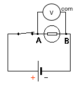
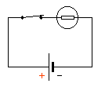
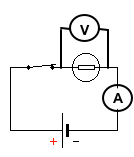
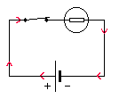

Mesures électriques dans un circuit
Brancher un multimètre (Voltmètre / Ampèremetre)
Voir les rappels d’électricité sur: allophysique.com/docs/PC_1ere/energie/energie3/
| tension | courant | puissance |
|---|---|---|
|  |  |  |
Travail pratique
- Recopier le schéma du circuit suivant dans votre cahier: 
- Positionner sur le schéma les multimètres qui mesurent la tension aux bornes de la pile, et le courant électrique dans le circuit.
- Réaliser le circuit. Ajouter un interrupteur pour éviter de vider la pile trop rapidement. Remplir le tableau avec les mesures.
Une source de tension pas si idéale
Caractéristique intensité - tension
A partir du premier montage réalisé, remplacer la lampe par un rhéostat. Faire varier le rheostat (20 à 1 000 Ω) et relever les valeurs de tension et de courant. Remplir le tableau:
- Quelle est la valeur maximale de la puissance fournie par la lampe? Quelles sont alors les valeurs de courant et de tension? Quelle est la resistance idéale?
- Utiliser un outil numérique - voir en bas de page pour:
- obtenir la courbe caractéristique intensité - tension
- obtenir l’équation de sa caractéristique
- Représentez l’allure de la courbe obtenue sur votre cahier.
- Indiquez l’équation de la caractéristique intensité - tension.
- Déterminer les valeur de la force électro motrice E de la pile, ainsi que sa resistance interne r.
Aide: Le modèle mathématique est:
$$U_{PN} = E - r.I$$
Source réelle de tension continue (concerne la 1ere Spé Physique Chimie)
Un générateur de tension réel est constituée :
- d’une source de tension idéale de force électromotrice (tension) noté E
- d’une resistance interne r
Par définition, la tension délivrée par ce générateur branché entre les bornes P et N est :
$$U_{PN} = E - r\times I$$
En effet, dans le circuit série complet : d’après la loi d’additivité des tensions :
Soit :
On met d’un côté de l’égalité tous les termes qui correspondent aux dipôles du générateur (encadré sur le schéma). Ce terme correpond à : U(PN)
$$U_{PN} = E - r\times I = R \times I$$
Ce qui revient à énoncer que la tension U(PN) aux bornes d’un générateur vaut :
$$U_{PN} = E - r\times I$$
Remarques :
- Pour un générateur de tension idéale, la tension U(PN) est égale à E, quelle que soit la valeur du courant I.
- Pour un générateur réel (non idéal), la tension délivrée par un générateur est décroissante avec I.
- Une partie de la puissance chimique est dégradée par effet Joule. On la note P(J), pour P(effet Joule) Cette partie dégradée de l’énergie vaut alors :
$$P_J = r \times I^2$$
Bilan de puissance pour un générateur : (voir livre de 1ere Spé Physique Chimie p 243)
Traitement numérique d’une serie de mesures
On pourra utiliser le script suivant à recopier, et modifier dans un editeur python:
import matplotlib.pyplot as plt
import numpy as np
from scipy.optimize import curve_fit
#--------------------------------------------------
#création des listes de variables utilisées dans le programme
#--------------------------------------------------
intensite=[0,0.05,0.09,0.11,0.15,0.20]
tension=[4.1,3.5,3.2,3.0,2.5,2.1]
grandeurs = ['intensite','tension']
#variables utilisées dans la modélisation polynomiale standard
a=0
b=0
c=0
d=0
#---------------------------------------------
# modélisation
#---------------------------------------------
tension=np.asarray(tension)
intensite=np.asarray(intensite)
def fit_func(x,a,b):
return a*x+b
#mise en place de l'outil curve fit (scipy)
params, mcov =curve_fit(fit_func,intensite,tension)
# params = coefficients retournés par le calcul de modélisation avec R2 minimal
# mcov = matrice de covariance, permet de quantifier la variation de chaque variable par rapport à chacune des autres
a = params[0]; b=params[1]
#-------------------------------------------------
# partie graphique avec quadrillage
#-------------------------------------------------
# titre du graphique
plt.title('Caracteristique Intensité-Tension)')
# label et config des axes
plt.xlabel(grandeurs[0])
plt.ylabel(grandeurs[1])
# Customize the major grid
plt.grid(which='major', linestyle='-', linewidth='0.5', color='red')
plt.minorticks_on()
# Customize the minor grid
plt.grid(which='minor', linestyle=':', linewidth='0.2', color='black')
# Turn off the display of all ticks.
plt.tick_params(which='both', # Options for both major and minor ticks
top='False', # turn off top ticks
left='True', # turn off left ticks
right='False', # turn off right ticks
bottom='True') # turn off bottom ticks
# Plot
plt.plot(intensite,tension,'o') # nuage de points de l'acquisition
plt.plot(intensite,fit_func(intensite,a,b),'g',linewidth=1) # courbe modelisee
equation = str(round(a,3))+" * Intensite + "+str(round(b,3))
plt.legend(["mesures",equation])
# modifier les axes APRES avoir positionné les points sinon l'echelle voulue
# n'est pas prise en compte
axes = plt.gca()
axes.set_xlim(left=0,right=max(intensite)*1.2,emit=False,auto=True)
axes.set_ylim(bottom=0,top=max(tension)*1.2,auto=True)
# affichage
plt.show()